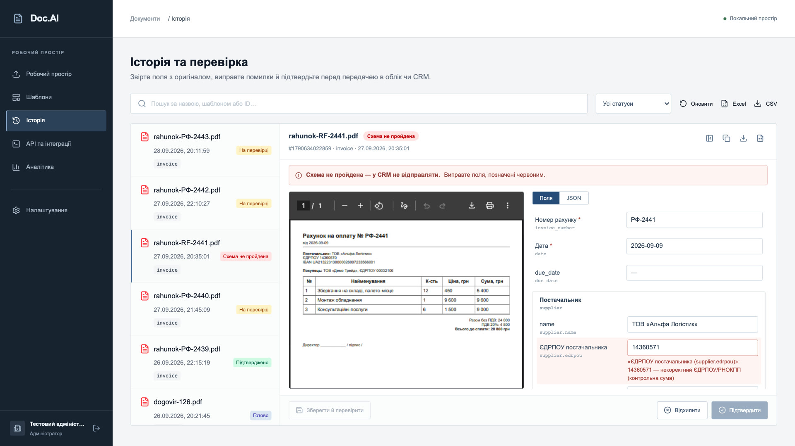
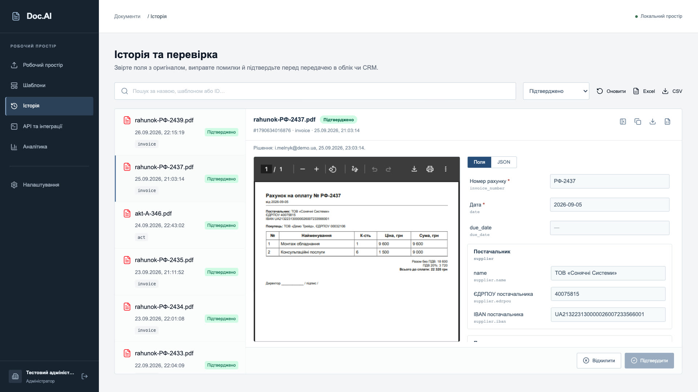
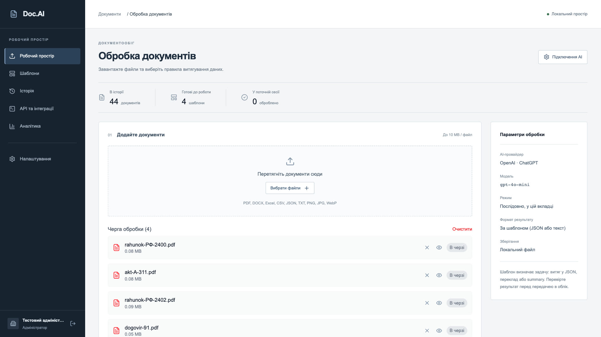
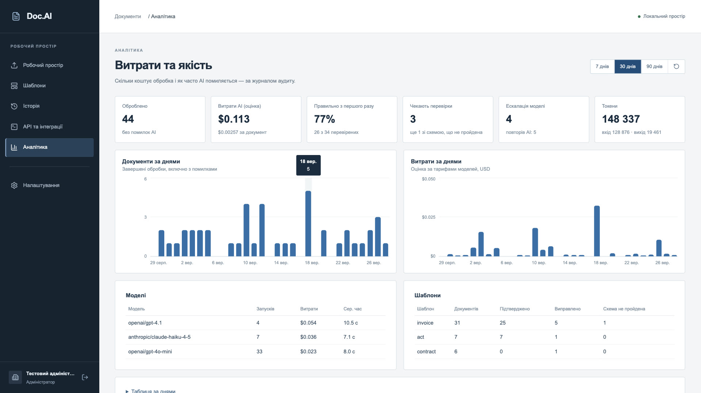

⏱час
Бухгалтер друкує замість того, щоб аналізувати
Було: кожен рахунок вручну — номер, дата, контрагент, позиції, суми.
З Doc.AI: поля заповнені, людина лише звіряє й натискає «Підтвердити».
Doc.AI розпізнає рахунки, акти, накладні й договори, сам перевіряє ЄДРПОУ, IBAN і суми та передає готові дані в 1С, BAS чи CRM. Ваша команда лише підтверджує результат — замість того щоб годинами передруковувати PDF.

Її не видно в бюджеті, але вона щомісяця забирає години кваліфікованих людей, створює ризик помилкових платежів і гальмує закриття періоду.
Було: кожен рахунок вручну — номер, дата, контрагент, позиції, суми.
З Doc.AI: поля заповнені, людина лише звіряє й натискає «Підтвердити».
Було: помилку помічають після повернення коштів або звернення контрагента.
З Doc.AI: контрольні суми ЄДРПОУ та IBAN і звірка сум ловлять її до оплати.
Було: пікове навантаження, переробки, тимчасові люди на введення.
З Doc.AI: пакет обробляється в черзі на сервері, поки команда працює далі.
Підставте свої цифри. Розрахунок прозорий: різниця між ручним введенням і перевіркою готових полів, мінус витрати на AI.
Оцінка на основі ваших вхідних даних. Реальний результат залежить від якості сканів і типів документів — перевірте на пілоті з власною первинкою.
Перевірити на своїх документахОдин інструмент — різні сценарії. Для кожного типу документа налаштовується свій шаблон полів і правил перевірки.
Вхідні рахунки й акти потрапляють в облік уже заповненими. Менше рутини в кінці місяця, швидше закриття періоду.
Реквізити перевірені до оплати, кожне рішення записане в журнал. Прозорі витрати й контроль без мікроменеджменту.
Накладні, ТТН і рахунки постачальників розбираються пакетами — позиції, кількості й суми одразу в таблиці.
Більше клієнтів тим самим складом: документи від різних компаній обробляються за єдиними шаблонами.
Стабільний API з чергою, підписані webhook-и й Postgres. Вбудовується в CRM, ERP чи портал постачальників.
Якщо документ можна описати полями — його можна автоматизувати власним шаблоном без програміста.
Як почати →Від завантаження пакета до підтвердженого рахунку в обліку — на реальних екранах продукту.
site/media/docai-presentation.mp4
Кожен документ розпізнаний, звірений за правилами обліку й підтверджений відповідальною людиною. Хто, коли і що змінив — видно в журналі.
форматів: PDF, скани й фото, Word, Excel, CSV — приймаємо первинку в тому вигляді, в якому вона приходить
Шаблон полів і перевірок для будь-якого типу документа налаштовується в інтерфейсі.
OpenAI, Gemini, Anthropic — без прив’язки до одного постачальника
Перегляд · оператор · адміністратор — кожен співробітник бачить і робить лише те, що йому дозволено.
Вартість кожного документа, моделі й точність з першого разу — у розділі аналітики. Сильніша модель вмикається лише тоді, коли дешевша не впоралась.
Поки бухгалтер відкриває наступний лист, попередній рахунок уже розпізнаний, перевірений і чекає одного кліку.
AI не проводить документи сам. Він готує дані, система перевіряє їх за правилами обліку, а рішення приймає відповідальна людина — і все це записано.

Наведіть на крок, щоб побачити відповідний екран продукту.

Не потрібно міняти облікову систему чи CRM. Doc.AI стає точкою контролю між документом, що прийшов, і системою, куди він має потрапити.
Після підтвердження CRM отримує подію з полями документа. Якщо CRM недоступна — повторні спроби протягом доби.
Файл ставиться в чергу одним запитом, повторні запити не створюють дублів. Документація в кабінеті.
Жодних «чорних скриньок» у бюджеті: аналітика показує витрати на AI, обсяги й якість розпізнавання — по днях, моделях і типах документів.

Без масштабного проєкту й зміни процесів: один відділ, один тип документа, реальна первинка — і ви бачите результат у цифрах.
Розгортаємо Doc.AI на вашому сервері або в хмарі, підключаємо обраного AI-провайдера.
Налаштовуємо поля й перевірки під ваш документ — рахунок, акт, накладну.
Проганяємо документи за минулі тижні: точність, час на перевірку, витрати.
Підключаємо 1С / BAS чи CRM, додаємо користувачів і нові типи документів.
Оцінити продукт за один вечір
Документи не залишають вашу інфраструктуру
Якщо немає власної інфраструктури
Ні — і не має. Він забирає механічне введення, а бухгалтер перевіряє й підтверджує. Люди витрачають час на аналіз і розбір виключень замість передруку.
Не наосліп — тому в продукт вбудована перевірка. Контрольні суми ЄДРПОУ та IBAN, звірка позицій, ПДВ і підсумку ловлять типові помилки розпізнавання, а документ із помилкою не піде в облік без виправлення й підтвердження людиною.
На вашому сервері або у вашому хмарному проєкті. Для розпізнавання файл надсилається лише обраному вами AI-провайдеру. Ключі доступу зберігаються зашифрованими й не потрапляють у браузер.
Ви платите AI-провайдеру за фактичне використання, без посередників. Точну вартість документа показує розділ «Аналітика», а дорожча модель вмикається лише тоді, коли дешевша не пройшла перевірку.
Рахунки й акти мають готові шаблони з перевірками. Для накладних, ТТН, платіжок, договорів чи будь-яких інших документів шаблон налаштовується в інтерфейсі: поля, формати, обов’язковість.
Для 1С, BAS і M.E.Doc — вивантаження в Excel і CSV. Для CRM та ERP — події після підтвердження документа й API з чергою. Змінювати ваші системи не потрібно.
Завантажте реальні документи — і побачите, скільки полів Doc.AI заповнює сам і скільки помилок ручного вводу виявляє перевірка.